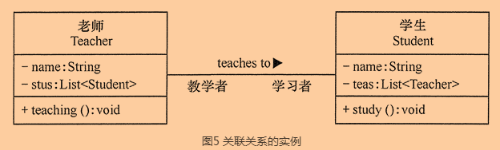
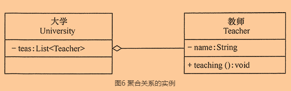
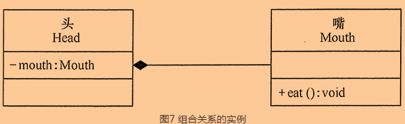
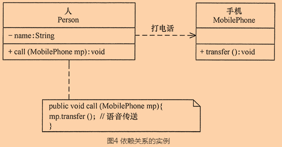
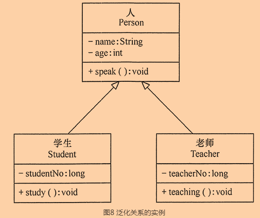
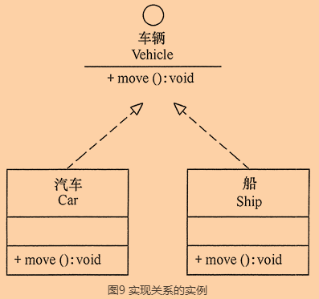
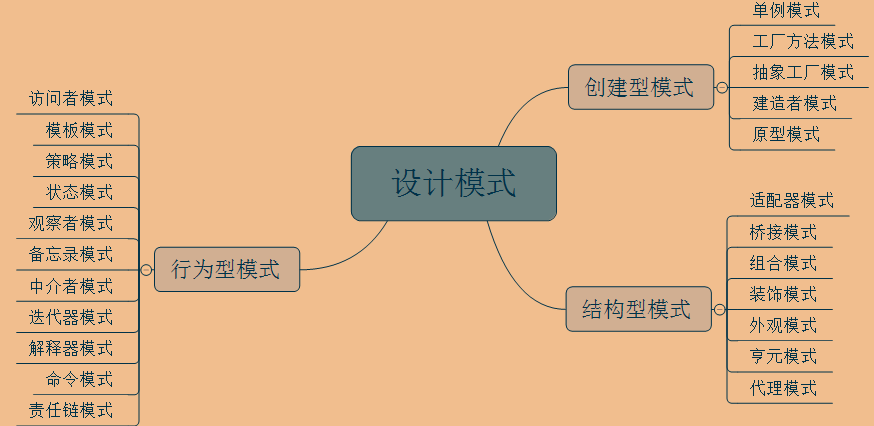

设计模式–学习笔记(包含设计模式视频)
Lesson1 设计模式概述
NO1.1 设计模式七大原则简介
设计模式一共有23种。
设计模式：
定义：设计模式是对软件设计中普遍存在且反复出现的各种问题，所提出的解决方案。就如同大厦和简易搭建的房间两者之间的区别；
目的：为了让程序或软件具有更好的代码重用性、可读性、可扩展性、使程序呈现高内聚、低耦合的特性；
设计模式的七大原则：
定义：所谓的七大原则，其实就是程序员在编程时，应当遵循的原则，也是各种设计模式的基础；
七大原则：
单一职责原则：
定义：该法则是针对类来说的，即一个类应该只负责一项职责。
如，类A赋值两个不同的职责：职责1，职责2。当职责1因为需求而改变A时，可能造成职责2的执行错误，所以需要将类A的粒度分解为A1，A2；电线类Wire为居民供电，电压为220v；但是新的需求增加，电线也输送高压电，电压为200kv，原有电线类可以增加方法实现扩充，这就违背了单一职责原则。可以提供基类，创建两个派生类，居民供电线、高压输电线。优点：
- 降低类的复杂度，即一个类只负责一项职责；
- 提高了类的可维护性和可读性。
接口隔离原则：
定义：客户端不应该依赖它不需要的接口，一个类对另一个类(接口是特殊的抽象类)的依赖应该建立在最小的接口上；简单讲就是，假如我有一个类需要某个方法，而某个接口中恰好有这个方法，那么我就会去实现这个接口，并重写那个我需要的方法对吧，但是如果这个接口中有许许多多的方法，但我需要的只有某一个方法，那么其他方法我也不得不实现，这就造成了，我的这个类实现了很多我不需要的方法，所以我尽量找只包含了我需要的那个方法的接口就行，这就是接口隔离原则，尽量找最小的依赖接口；
考试接口，包含考语数外、理化生、政史地等方法。学生类，实现考试接口，参加考试。文科生类、理科生类派生自学生类，实现考试接口时，就都需要实现一些自己不需要的方法（因为文科生不考理化生、理科生不考政史地）。这时，需要对考试接口进行细化，分为基础科考试接口、文科考试接口和理科考试接口；学生类实现基础科考试接口；文科生、理科生另外各自实现文科考试接口、理科考试接口。优点：
- 适度的细化，使得接口不会过于臃肿；
依赖倒置原则；
定义：高层模块不应该依赖低层模块，二者都应该依赖其抽象；抽象(抽象类或接口)不应该依赖细节(子类或者实现类)；细节应该依赖抽象；
母亲类Mother有讲故事方法TellStory，依赖一个Book类输入，并使用了Book类的showStory方法以便讲故事。那么下次需要母亲讲报纸上的故事、手机上的故事时，原有接口无能为力。这时，抽象一个包含showStory方法的Story基类或接口，而Book、Newspaper、Cellphone各自继承或实现。最后母亲的TellStory方法接受一个Story实例，并调用showStory方法即可。优点：这要求程序基于面向接口编程，使用接口或者抽象类制定好规范和契约，而不去涉及任何具体的操作，把展现细节的任务交给他们的实现类去完成；
里氏替换原则：
定义：所有引用基类的地方必须能透明地使用其子类的对象；
讲白了就是子类在继承父类的时候，根据里氏替换原则，尽量不要重写父类的方法，因为继承本身就让两个类的耦合性增强了，在适当的情况下可以通过聚合、组合、依赖来解决问题；已经定义鸟类具有两个翅膀飞的方法；新加入鸵鸟，不会飞，如果覆盖父类的方法，在两个翅膀飞的方法中什么也不做，就违背里氏替换原则，导致所有鸟都不会飞。应该创建并列的两种鸟基类，会飞与不会飞的。前置条件更宽松、后置条件更严格，比如父类返回Map，子类返回HashMap；父类接受HashMap形参，子类接受Map。
开闭原则：
- 定义：是编程中最基础，最重要的原则。对扩展开放(对提供方而言)，对修改封闭(对使用方而言)。即系统进行扩展是被鼓励的，对现有系统代码进行修改是不被支持的。也就是说，当软件有新的需求变化的时候，只需要通过对软件框架进行扩展来适应新的需求，而不是对框架内部的代码进行修改；
迪米特法则：
定义：又叫最少知道原则，即一个类对自己依赖的类知道的越少越好。也就是说，不管对于被依赖的类有多么的复杂，都尽量将逻辑封装在类的内部，对外除了提供public方法，不对外泄露任何信息；
校长管理老师，老师管理学生。校长需要全体点名时，首先对老师点名，但是不必通过老师获取学生的信息并点名，而应该让老师对各自管理学生的点名，否则校长和学生之间就发生了原本不必要的耦合，这样当学生类发生变化时，既要修改老师类，也要修改校长类。优点：降低了类与类之间的耦合；
合成复用原则：
- 定义：当要扩展类的功能时，优先考虑使用合成/聚合，而不是继承；
Lesson2 设计模式基础
NO2.1 UML
UML是在设计模式中常用的语言。
UML：
定义：即统一建模语言(Unified Modeling Language，即UML)，又称标准建模语言，是始于1997年的一个OMG(Object Management Group 对象管理组织)标准，它是一个支持模型化和软件系统开发的图形化语言，为软件开发的所有阶段提供模型化和可视化支持。UML采用了一组形象化的图形(如类图)符号作为建模语言，使用这些符号可以形象地描述系统的各个方面；UML通过建立图形之间的各种关系(如类与类之间的关系)来描述模型。
UML中的关系主要包括：
关联关系(association)：用于表示一类对象与另一类对象之间的联系。关联关系是类与类之间最常用的一种关系，可分为：一般关联关系：这种关联可以是双向的，也可以是单向的。在UML类图中，双向的关联可以用带两个箭头或者没有箭头的实线来表示，单向的关联用带一个箭头的实线来表示，箭头从使用类指向被关联的类。也可以在关联线的两端标注角色名，代表两种不同的角色。在代码中通常将一个类的对象作为另一个类的成员变量来实现关联关系；

聚合关系：是关联关系的一种，是强关联关系，是整体和部分之间的关系，是has-a 的关系。聚合关系也是通过成员对象来实现的，其中成员对象是整体对象的一部分，但是成员对象可以脱离整体对象而独立存在。在UML类图中，聚合关系可以用带空心菱形的实线来表示，菱形指向整体
组合关系：也是关联关系的一种，也表示类之间的整体与部分的关系，但它是一种更强烈的聚合关系，是cxmtains-a关系。在组合关系中，整体对象可以控制部分对象的生命周期，一旦整体对象不存在，部分对象也将不存在，部分对象不能脱离整体对象而存在。在UML类图中，组合关系用带实心菱形的实线来表示，菱形指向整体。
依赖关系(dependency)：即在A类中有使用B类的对象(作为成员属性、局部变量、方法参数、返回值类型等)，那么A和B就是依赖关系，即A是依赖方，B是被依赖方。该关系是一种使用关系，是对象之间耦合度最弱的一种关联方式，是临时性的关联；在UML类图中，依赖关系使用带箭头的虚线来表示，箭头从使用类指向被依赖的类；
泛化关系(generalization)：这种关系其实就是继承关系；该关系是对象之间耦合度最大的一种关系。在UML类图中，泛化关系用带空心三角箭头的实线来表示，箭头从子类指向父类；
实现关系(realization)：该关系就是接口与实现类的关系。在UML类图中，实现关系使用带空心三角箭头的虚线来表示，箭头从实现类指向接口。
UML中图的分类：
- 静态模型图：描述系统的静态结构；
- 类图(最重要)：
- 定义：描述系统中类与类之间的关系的静态视图
- 对象图
- 包图
- 组件图
- 部署图
- 类图(最重要)：
- 动态模型图：描述系统行为的各个方面；
- 用例图
- 时序图
- 协作图
- 状态图
- 活动图
- 静态模型图：描述系统的静态结构；
NO2.2 设计模式分类
设计模式有三大分类。
设计模式的分类：
创建型模式：对象实例化的模式，创建型模式用于解耦对象的实例化过程；
结构型模式：把类或对象结合在一起形成一个更大的结构;
行为型模式：类和对象如何交互，及划分责任和算法。

NO2.3 单例模式
该模式下有5种设计模式。
单例模式：就是确保某一个类只有一个实例，并且提供一个获取该实例的方法(静态方法)。特点是对于那些需要经常创建和销毁对象的操作，提高了性能。
如，JDK中的Runtime类就使用了单例模式。单例模式有八种写法：饿汉式--静态常量(可用)：代码如下：
public class Singleton { private final static Singleton INSTANCE = new Singleton(); private Singleton(){} public static Singleton getInstance(){ return INSTANCE; } }优点：这种写法比较简单，就是在类加载的时候就完成实例化，避免了线程同步问题；
缺点：在类加载的时候就完成实例化，没有达到Lazy Loading(即懒加载)的效果；如果从始至终从未使用过这个实例，则会造成内存的浪费。
饿汉式--静态代码块(可用)：代码如下：
public class Singleton { private static Singleton instance; static { instance = new Singleton(); } private Singleton() {} public static Singleton getInstance() { return instance; } }优点：这种方式和上面的方式其实类似，只不过将类实例化的过程放在了静态代码块中，也是在类加载的时候，就执行静态代码块中的代码，即初始化类的实例；
缺点：没有达到懒加载效果，不用该对象的话，可能会造成内存浪费。
懒汉式--线程不安全(多线程不可用)：代码如下：
public class Singleton { private static Singleton singleton; private Singleton() {} public static Singleton getInstance() { if (singleton == null) { singleton = new Singleton(); } return singleton; } }优点：这种写法起到了Lazy Loading的效果，但是只能在单线程下使用；
缺点：该方式如果在多线程下，一个线程进入了if(singleton == null)判断语句块，还没来得及往下执行，另一个线程也通过了这个判断语句，这时便会产生多个实例。所以在多线程环境下不可使用这种方式，所以实际代码开发环境中也不要用该方式。
懒汉式--同步方法(虽线程安全，但不推荐用)：代码如下：
public class Singleton { private static Singleton singleton; private Singleton() {} public static synchronized Singleton getInstance() { if (singleton == null) { singleton = new Singleton(); } return singleton; } }优点：懒加载、线程安全；
缺点：效率太低了，每个线程在想获得类的实例时候，执行getInstance()方法都要进行同步；但这个方法只执行一次实例化代码就够了，后面的想获得该类实例，直接return就行了。方法进行同步效率太低要改进。
懒汉式--同步代码块(线程不安全，但不推荐用)：代码如下：
public class Singleton { private static Singleton singleton; private Singleton() {} public static Singleton getInstance() { if (singleton == null) { synchronized (Singleton.class) { singleton = new Singleton(); } } return singleton; } }缺点：跟第3种实现方式遇到的情形一致，假如一个线程进入了if(singleton == null)判断语句块，还未来得及往下执行，另一个线程也通过了这个判断语句，这时便会产生多个实例。
双重检查(推荐使用)：代码如下：
public class Singleton { private static volatile Singleton singleton; private Singleton() {} public static Singleton getInstance() { if (singleton == null) { synchronized (Singleton.class) { if (singleton == null) { singleton = new Singleton(); } } } return singleton; } }优点：线程安全、延迟加载、效率较高。Double-Check概念对于多线程开发者来说不会陌生，如代码中所示，我们进行了两次if(singleton == null)检查，这样就可以保证线程安全了。这样，实例化代码只用执行一次，后面再次访问时，判断if (singleton == null)，直接return实例化对象。
静态内部类(推荐使用)：代码如下：
public class Singleton { private Singleton() {} private static class SingletonInstance { private static final Singleton INSTANCE = new Singleton(); } public static Singleton getInstance() { return SingletonInstance.INSTANCE; } }优点：延迟加载、效率高、避免了线程不安全。静态内部类方式在Singleton类被装载时并不会立即实例化，而是在需要实例化时，调用getInstance方法，才会装载SingletonInstance类，从而完成Singleton的实例化。类的静态属性只会在第一次加载类的时候初始化，所以在这里，JVM帮助我们保证了线程的安全性，在类进行初始化时，别的线程是无法进入的。
枚举(推荐使用)：代码如下：
public enum Singleton { INSTANCE; //因为枚举本质就是一个类，枚举中的常量其实都是枚举的实例 public void whateverMethod() { } }
NO2.4 工厂方法模式
在学习工厂方法模式之前，我们先了解一下简单工厂模式，这个模式是工厂模式中最简单，也是使用最多的一种模式。
简单工厂模式：
定义：定义一个工厂类，它可以根据参数的不同返回不同类的实例，被创建的实例通常都具有共同的父类。
通俗讲，就是你给工厂传一个类型，然后工厂根据你传入的类型，给你造这个类型的对象出来，然后返回给你；如果想要造别的东西，那么需要改变传入的参数，但在单例模式中，工厂肯定只有一个实例，那么就必须修改传入的参数，那么这就不符合开闭原则了；在简单工厂模式中用来创建实例的方法通常为静态方法,因此简单工厂模式又被成为静态工厂方法；但该模式的缺点是增加新产品时会违背“开闭原则”。代码如下：
//电脑抽象类 public abstract class Computer { //开机方法 public abstract void open(); } //------------------------------------------ public class MacComputer extends Computer{ @Override public void start() { System.out.println("苹果电脑启动"); } } //------------------------------------------ public class WindowsComputer extends Computer{ @Override public void start() { System.out.println("windows电脑启动"); } } //------------------------------------------ //工厂类 public class ComputerFactory { public static Computer createComputer(String type){ Computer myComputer=null; switch (type) { case "mac": myComputer=new MacComputer(); break; case "windows": myComputer=new WindowsComputer(); break; } return myComputer; } } //------------------------------------------ //调用工厂类 public class CreatComputer { public static void main(String[]args){ ComputerFactory.createComputer("mac").start(); } }
工厂方法模式：
定义：定义一个创建产品对象的工厂接口，将产品对象的实际创建工作推迟到具体子工厂类当中。
通俗讲就是，即造什么样的工厂和工厂里造什么样的对象，都由你来指定；但是当你想要造其它东西的时候，你却需要另外造工厂和决定工厂要造的对象，但这样可能会造成工厂类过多，代码繁杂；这满足创建型模式中所要求的“创建与使用相分离”的特点。该模式中，当需要增加一个新的产品时，我们只需要增加一个具体的产品类和与之对应的具体工厂即可，无须修改原有系统；代码如下：
//抽象产品：提供了产品的接口 interface Product { public void show(); } //------------------------------------------ //这就是拓展，当我们需要什么样的产品，就实现产品接口，即增加一个具体的产品类 //具体产品1：实现抽象产品中的抽象方法 class ConcreteProduct1 implements Product { public void show() { System.out.println("具体产品1显示..."); } } //具体产品2：实现抽象产品中的抽象方法 class ConcreteProduct2 implements Product { public void show() { System.out.println("具体产品2显示..."); } } //------------------------------------------ //这也是扩展，需要指定的产品，就需要增加一个能够生产指定产品的工厂类 //抽象工厂：提供了厂品的生成方法 interface AbstractFactory { public Product newProduct(); } //------------------------------------------ //具体工厂1：实现了厂品的生成方法 class ConcreteFactory1 implements AbstractFactory { public Product newProduct() { System.out.println("具体工厂1生成-->具体产品1..."); return new ConcreteProduct1(); } } //具体工厂2：实现了厂品的生成方法 class ConcreteFactory2 implements AbstractFactory { public Product newProduct() { System.out.println("具体工厂2生成-->具体产品2..."); return new ConcreteProduct2(); } } //-------------------------------------------- //生产工作流程 public class MyTest { public static void main(String[] args){ //客户要产品A ConcreteFactory1 cf1 = new ConcreteFactory1(); cf1.newProduct().Show(); //客户要产品B ConcreteFactory2 cf2 = new ConcreteFactory2(); cf2.newProduct().Show(); } }
NO2.5 抽象工厂模式
抽象工厂模式是工厂方法模式的升级版本，工厂方法模式只生产一个等级的产品，而抽象工厂模式可生产多个等级的产品。
抽象工厂模式：
定义：就是根据你的需求，为你创建一组相关或相互依赖对象的接口；
通俗讲，就是把你想要生产的产品抽象成一个抽象根类或根接口，生产该产品的工厂也抽象成一个根类或根接口，然后在这两类中，根据你的需求实际创建你想要的产品和工厂，这样，工厂就不局限于只生产一种产品了；代码如下：
//植物接口 public interface Plant{ public abstract void grow(); } //西红柿 public class Tomato implements Plant{ @Override public void grow() { System.out.println("西红柿正在生长中"); } } //茄子 public class Eggplant implements Plant{ @Override public void grow() { System.out.println("茄子正在生长中"); } } //------------------------------------ //动物接口 public interface Animal{ public abstract void eat(); } //猪 public class Pig implements Animal{ @Override public void eat() { System.out.eat("小猪正在吃东西"); } } //奶牛 public class Cow implements Animal{ @Override public void eat() { System.out.eat("奶牛正在吃东西"); } } //------------------------------------ //抽象农场 public interface Farm{ public abstract Plant createPlant(Plant plant); public abstract Animal createAnimal(Animal animal); } //1号农场 public class FarmOne implements Farm{ @Override public Plant createPlant() { reutrn new Tomato(); } @Override public Animal createAnimal() { reutrn new Cow(); } } //2号农场 public class FarmTwo implements Farm{ @Override public Plant createPlant() { reutrn new Eggplant(); } @Override public Animal createAnimal() { reutrn new Pig(); } } //------------------------------------ //测试 public class MyTest { public static void main(String[] args){ //客户要能够造西红柿、奶牛产品的农场 FarmOne fo = new FarmOne(); fo.createPlant(); fo.createAnimal(); //客户要能够造茄子、猪产品的农场 FarmTwo ft = new FarmTwo(); ft.createPlant(); ft.createAnimal(); } }
NO2.6 原型模式
在有些系统中，存在大量相同或相似对象的创建问题，如果用传统的构造函数来创建对象，会比较复杂且耗时耗资源，用原型模式生成对象就很高效，就像孙悟空拔下猴毛轻轻一吹就变出很多孙悟空一样简单。
原型模式：
定义：用一个已经创建的实例作为原型，通过复制该原型对象来创建一个和原型相同或相似的新对象。通俗讲，这就是克隆对象的操作；Spring中的
标签的scope属性的值prototype就是使用了原型模式来创建多例对象的模式； 分类：
浅克隆：Java中的Object类提供了浅克隆的clone()方法，原型实体类只要实现Cloneable接口就可实现对象的浅克隆；在浅克隆时，对象中的成员属性里，如果是基本数据类型，那么只是值传递，也就是一份放到了克隆对象的成员属性中；如果是引用数据类型，那么只是原型对象里对象成员属性的引用；
public class Student{ private Inreger id; private String name; private Teacher teacher; } 说明：上面学生类中，成员属性有一个是对象类型的，那么在原型对象调用clone()方法时，克隆得到的对象中，这个teacher对象，只是原型对象的中对象属性的一个引用，即所有克隆对象都相当于共享了这个对象属性。深克隆：为了解决浅克隆中，对象类型的成员属性只是原型对象中对应成员属性的一个引用的问题，由此产生了深克隆，也就是为每个克隆对象的对象类型属性都申请内存空间。深克隆有两种方式：
重写clone方法来实现深克隆；
public class Teacher implements Cloneable{ private Inreger id; private String name; } public class Student implements Cloneable{ private Inreger id; private String name; private Teacher teacher; @Override public Student clone() throw CloneNotSupportedException{ //首先，调用Object类的clone，也就是浅克隆，获得所有非对象类型的数据的克隆 Object obj = super.clone(); //向下转型成Student类型的对象 Student s = (Student) obj; //单独给对象类型的数据进行操作 s.teacher = teacher.clone(); return s; } } 注意：Student和Teacher都要实现cloneable接口。通过对象序列化实现深拷贝(推荐)；
public class Teacher implements Serializable{ private Inreger id; private String name; } public class Student implements Serializable{ private Inreger id; private String name; private Teacher teacher; public Student deepClone() throw CloneNotSupportedException{ //创建一个字节数组输出流 ByteArrayOutputStream bos = new ByteArrayOutputStream(); //创建一个对象的序列化流，该对象需要一个输出流参数， ObjectOutputStream oos = new ObjectOutputStream(bos); //将原型对象进行序列化操作，但此时原型对象在字节数组流中以字节数组的形式存在着 oos.wirteObject(this); //创建一个字节数组输入流，需要一个字节数组参数，而字节数组输出流对象的toByteArray()方法就可以创建一个和当前输出流用的字节数组大小一致 ByteArrayInputStream bis = new ByteArrayInputStream(bos.toByteArray()); //创建一个对象的反序列化流，该对象需要一个输入流参数 ObjectInputStream ois = new ObjectInputStream(bis); //反序列化，将流中的对象读取出来 Student student = ois.readObject(); //关闭流对象 bos.close(); oos.close(); bis.close(); ois.close(); return student; } } 说明： 一、ObjectOutputStream：对象的序列化流，作用是：把对象转成字节数据并输出到文件中保存，对象的输出过程称为序列化，可实现对象的持久存储； 1.ObjectOutputStream(OutputStream out)：创建一个对象序列化流，需要的参数为一个输出流； 2.void writeObject(Object obj)：将指定的对象写入对象序列化流中； 注意：使用深克隆时，原型对象中的所有对象类型属性，都要实现Serializable接口；且深克隆在全新的类中并不难编写，但是在已有类中编写，则违背了ocp原则(即开闭原则)，这一点大家要注意一下。
NO2.7 建造者模式
在软件开发过程中有时需要创建一个复杂的对象，这个复杂对象通常由多个子部件按一定的步骤组合而成。
建造者模式：
定义：指将一个复杂对象的构造与它的表示分离，使同样的构建过程可以创建不同的表示，这样的设计模式被称为建造者模式；
代码如下：
//电脑产品类 public class Computer { String memory; String IO; String CPU; @Override public String toString() { return "memory:"+memory+"\n"+"IO:"+IO+"\n"+"CPU:"+CPU; } } //------------------------------------- //造电脑的抽象类 public abstract class ComputerBuilder{ //具体的造电脑步骤 public abstract Computer getProduct(); //造电脑需要的CPU的方法 public abstract void buildCPU(); //造电脑需要的Memory的方法 public abstract void buildMemory(); //造电脑需要的IO的方法 public abstract void buildIO(); } //------------------------------------- //具体的电脑厂商要造电脑，就要实现造电脑的抽象类 public class DellComputerBuilder extends ComputerBuilder{ private Computer DellComputer = new Computer(); @Override public Computer getProduct() { buildCPU(); buildIO(); buildMemory(); return DellComputer; } @Override public void buildCPU() { // TODO Auto-generated method stub DellComputer.CPU = "dellCPU"; } @Override public void buildMemory() { // TODO Auto-generated method stub DellComputer.IO = "dellIO"; } @Override public void buildIO() { // TODO Auto-generated method stub DellComputer.memory = "dellMemory"; } } //------------------------------------- //电脑经理负责将电脑卖出 public class ComputerManager { private ComputerBuilder computerBuilder; public ComputerManager(ComputerBuilder cb) { this.computerBuilder = cb; } public Computer getComputer() { return computerBuilder.getProduct(); } }
NO2.8 适配器模式
在软件设计中也可能出现：需要开发的具有某种业务功能的组件在现有的组件库中已经存在，但它们与当前系统的接口规范不兼容，如果重新开发这些组件成本又很高，这时用适配器模式能很好地解决这些问题。
适配器模式：
定义：将一个类的接口转换成客户希望的另外一个接口，使得原本由于接口不兼容而不能一起工作的那些类能一起工作。适配器模式分为类结构型模式和对象结构型模式两种，前者类之间的耦合度比后者高，且要求程序员了解现有组件库中的相关组件的内部结构，所以应用相对较少些；
适配器模式中涉及到三个角色：
- 源：需要被适配的对象或类型，相当于插头；
- 适配器：连接目标和源的中间对象，相当于插头转换器；
- 目标：期待得到的目标，相当于插座。
分类：
类结构型模式：即源跟适配器之间是继承关系的模式，就是类结构模式；
//源 public class Adaptee { public void method1(){ System.out.println("method 1"); } } //----------------------------------- //目标 public interface Target { void method1(); void method2(); } //----------------------------------- //适配器 public class Adapter extends Adaptee implements Target { @Override public void method2() { System.out.println("method 2"); } } //----------------------------------- // 测试 class AdapterTest { public static void main(String[] args) { Adapter adapter = new Adapter(); adapter.method1(); adapter.method2(); } }对象结构型模式：即源跟适配器之间是组合关系(即，把源封装进适配器中)的模式，就是类结构模式；
//源 public class Adaptee { public void method1(){ System.out.println("method 1"); } } //----------------------------------- //目标 public interface Target { void method1(); void method2(); } //----------------------------------- //适配器 public class Adapter implements Target { private Adaptee adaptee; public Adapter(Adaptee adaptee) { this.adaptee = adaptee; } @Override public void method1() { adaptee.method1(); } @Override public void method2() { System.out.println("method 2"); } } class AdapterTest { public static void main(String[] args) { Adapter adapter = new Adapter(new Adaptee()); adapter.method1(); adapter.method2(); } }接口结构型模式：即抽象适配器与目标是实现关系，具体适配器与抽象适配器是继承关系的模式，就是接口结构模式；
//目标 public interface Target { void method1(); void method2(); void method3(); } //----------------------------------- //抽象适配器 public abstract class AbsAdapter implements Target { @Override public void method1() { System.out.println("method 1"); } @Override public void method2() { System.out.println("method 2"); } @Override public void method3() { System.out.println("method 3"); } } //具体适配器，由于客户只想要的是method1和method2，不要method3，所以 public class Adapter extends AbsAdapter { @Override public void method1() { adaptee.method1(); } @Override public void method2() { System.out.println("method 2"); } }
NO2.9 桥接模式
桥接模式：
定义：将抽象与实现分离，使它们可以独立变化。它是用组合关系代替继承关系来实现，从而降低了抽象和实现这两个可变维度的耦合度；
代码如下：
//手机内存接口 public interface Memory{ public abstract void createMemory(); } //手机内存接口实现类1 public class Memory4G{ @Override public void createMemory(){ System.out.println("创建4G内存"); } } //手机内存接口实现类2 public class Memory8G{ @Override public void createMemory(){ System.out.println("创建8G内存"); } } 说明：上面是普通的接口和对应的实现类 //-------------------------------- //手机抽象类 public abstract Phone{ //手机需要内存来运行，所以.. private Memory memory; //用构造方法将手机内存与手机进行组合 public Phone(Memory memory){ this.memory = memory; } public abstract void createPhone(); } //华为手机类 public class HuaWei extends Phone{ private Memory memory; public Phone(Memory memory){ this.memory = memory; } @Override public void createPhone(){ System.out.println("制造华为手机"); } } //苹果手机类 public class IPhone extends Phone{ private Memory memory; public Phone(Memory memory){ this.memory = memory; } @Override public void createPhone(){ System.out.println("制造苹果手机"); } } 说明：说明的手机抽象类中，就是用组合的方式，将内存接口组合进手机抽象类中，然后内存接口和手机抽象类又分别可以各自拓展，也就是所谓的独立变化，这就是桥接模式。
NO2.10 装饰者模式
装饰者模式：
定义：指在不改变现有对象结构的情况下，动态地给该对象增加一些新的功能的模式；
代码如下：
//抽象汉堡类(理论上需要被装饰的抽象对象) public abstract class Humburger { protected String name ; public String getName(){ return name; } public abstract double getPrice(); } //抽象汉堡的实现：鸡腿堡(实际上需要被装饰的实例对象) public class ChickenBurger extends Humburger { public ChickenBurger(){ name = "鸡腿堡"; } @Override public double getPrice() { return 10; } } //-------------------------------- //抽象配料类(理论上用来装饰的抽象对象) public abstract class Condiment extends Humburger { public abstract String getName(); } //抽象配料类的实现：生菜(实际上用来装饰的实例对象) public class Lettuce extends Condiment { Humburger humburger; public Lettuce(Humburger humburger){ this.humburger = humburger; } @Override public String getName() { return humburger.getName()+" 加生菜"; } @Override public double getPrice() { return humburger.getPrice()+1.5; } } //抽象配料类的实现：芝士(实际上用来装饰的实例对象) public class cheese extends Condiment { Humburger humburger; public cheese(Humburger humburger){ this.humburger = humburger; } @Override public String getName() { return humburger.getName()+" 加奶酪"; } @Override public double getPrice() { return humburger.getPrice()+3.0; //加芝士要多加3.0美元哦 } } 说明：分别创建汉堡类和配料类的抽象类，这两个就是被装饰者和装饰者；然后分别创建这两个抽象类的子类，不过在配料子类中，需要将被装饰者，也就是汉堡子类组合进配料子类中，那么就完成了装饰者的功能，因为在装饰者配料中，实现了为汉堡“加料”的装饰功能，这就是装饰者模式。
NO2.11 组合模式
在现实生活中，存在很多“部分-整体”的关系。如，公司中的部门与分公司、学习用品中的书与书包、生活用品中的衣月艮与衣柜以及厨房中的锅碗瓢盆等。
组合模式：
定义：将对象组合成树形结构以表示“部分-整体“的层次结构；
代码如下：
//抽象构件：物品 interface Articles{ public float calculation(); //计算 public void show(); } //-------------------------------- //树叶：商品 class Goods implements Articles{ private String name; //名字 private int quantity; //数量 private float unitPrice; //单价 public Goods(String name,int quantity,float unitPrice) { this.name=name; this.quantity=quantity; this.unitPrice=unitPrice; } public float calculation() { return quantity*unitPrice; } public void show() { System.out.println(name+"(数量："+quantity+"，单价："+unitPrice+"元)"); } } //-------------------------------- //树枝：袋子 class Bags implements Articles{ private String name; //名字 private ArrayList<Articles> bags=new ArrayList<Articles>(); public Bags(String name) { this.name=name; } public void add(Articles c) { bags.add(c); } public void remove(Articles c) { bags.remove(c); } public Articles getChild(int i) { return bags.get(i); } public float calculation() { float s=0; for(Object obj:bags) { s+=((Articles)obj).calculation(); } return s; } public void show() { for(Object obj:bags) { ((Articles)obj).show(); } } } 说明：也就是说，商品放在了袋子中，而这种将商品与袋子进行组合的树形结构(即袋子里面有商品)，就是组合模式。
NO2.12 外观模式
在现实生活中，常常存在办事较复杂的例子，如办房产证或注册一家公司，有时要同多个部门联系，这时要是有一个综合部门能解决一切手续问题就好了。
外观模式：
定义：是一种通过为多个复杂的子系统提供一个一致的接口，而使这些子系统更加容易被访问的模式；简单讲，就是对外提供一个统一的方法，来访问子系统中的一群接口；
代码如下：
//开水 public class BoiledWater { //烧开水 public void boiling(){ System.out.println("正在烧开水...."); } } //茶叶 public class Tea { public getTheTea(){ System.out.println("正在拿茶叶...."); } } //茶杯 public class TeaCup { public cleanTeaCup(){ System.out.println("正在洗茶杯...."); } } //店小二 public class Waiter { private BoiledWater boiledWater; private Tea tea; private TeaCup teaCup; //创建一个店小二，准备要去工作了 public Waiter(BoiledWater boiledWater,Tea tea,TeaCup teaCup){ this.boiledWater = boiledWater; this.tea = tea; this.teaCup = teaCup; } public void work(){ boiledWater.boiling(); teaCup.cleanTeaCup(); tea.getTheTea(); System.out.println("茶泡好了，慢用...."); } } //----------------------------- public class Mytest { public static void main(String[] args) { BoiledWater boiledWater = new BoiledWater(); TeaCup teaCup = new TeaCup(); Tea tea = new Tea(); //叫店小二 Waiter waiter = new Waiter(); //从店小二那获得一杯茶 waiter.work(); } }
NO2.13 享元模式
享元模式
定义：也叫蝇量模式，即运用共享技术来有効地支持大量细粒度对象的复用；最常见的就是String常量池，数据库连接池等等；
代码如下：
//抽象书 public abstract class Book{} //具体书 public class AnyBook extends Book{ //书名 private String name; public AnyBook(String name){ this name = name; } } //------------------------------------ //图书馆 public class Library{ //图书列表 private HashMap<String,Book> bookList = new HashMap<>(); //维护一个图书馆对象 private static Library library = new Library(); //获取图书馆对象 public static Library getInstance(){ return library; } //图书馆的借书方法 public Book borrowBooks(String bookName){ AnyBook ABook = null; //看图书馆列表是否有这本书，有就借出去 if(bookList.containsKey(bookName)){ ABook = bookList.get(bookName); //并将该书的库存设为null，这里null表示没有库存了的意思，这里只考虑图书馆每本书只存一本 bookList.put(bookName, null); return ABook; }else{ //没有这本书，就去订购，并存入图书馆 ABook = new AnyBook(bookName); bookList.put(bookName, ABook); return bookList.get(bookName); } } //还书方法 public void giveBack(AnyBook book){ String name = book.name; if(bookList.get(bookName) == null){ bookList.put(bookName, book); System.out.println("还书成功...."); } } } 说明：上面代码中的，书对象，其实就是一个共享对象(这里只考虑一本书只存一本)，为什么这么说呢？加入学校有2000人，我不可能为2000个人将图书馆的每一本书都存个2000本，这不现实，所以其实只要有一本就行，即学生借书之后，换了回来，然后再借给下一个人，这本书可以被2000个人共享，这就是享元(即共享一个对象)模式。
NO2.14 代理模式
在有些情况下，一个客户不能或者不想直接访问另一个对象，这时需要找一个中介帮忙完成某项任务，这个中介就是代理对象。例如，购买火车票不一定要去火车站买，可以通过 12306 网站或者去火车票代售点买。又如找女朋友、找保姆、找工作等都可以通过找中介完成。
动态代理：
定义：由于某些原因需要给某对象提供一个代理以控制对该对象的访问；
分类：
静态代理：
定义：静态代理在使用时，需要定义接口或者父类，被代理对象与代理对象一起实现相同的接口或者是继承相同父类；
代码如下：
//结婚的接口 interface Marry{ public abstract void happyMarry(); } //------------------------------------ //我结婚 class I implements Marry{ @Override public void happyMarry() { System.out.println("终于买房，并找到爱自己的人，一起结婚了，开心！"); } } //------------------------------------ //婚庆公司 class WeddingCompany implements Marry{ private I husband; public WeddingCompany(I husband){ this.husband = husband; } @Override public void happyMarry() { ready(); husband.happyMarry(); after(); } public void ready() { System.out.println("正在布置婚礼会场，以及邀请司仪，您先去迎接可爱的新娘"); } public void after() { System.out.println("婚礼举办完成啦，入洞房！！！！！"); } }
动态代理：
定义：也叫JDK代理或接口代理。不需要实现接口，代理对象的生成，是利用JDK的API，动态的在内存中构建代理对象(需要我们指定创建代理对象/目标对象实现的接口的类型)；JDK的动态代理API：
- 代理类所在包：
java.lang.reflect.Proxy； - 调用的方法：
static Object newProxyInstance(ClassLoader loader, Class<?>[] interfaces,InvocationHandler h )；ClassLoader loader：指定当前被代理对象使用的类加载器，获取加载器的方法是固定的，即类名.getClass().getClassLoader()；Class<?>[] interfaces：被代理对象实现的接口的类型，使用泛型方式确认类型；InvocationHandler h：事件处理，执行目标对象的方法时，会触发事件处理器的方法，会把当前执行被代理对象的方法作为参数传入。
- 代理类所在包：
代码如下：
//结婚的接口 interface Marry{ public abstract void happyMarry(); } //------------------------------------ //我结婚 class I implements Marry{ @Override public void happyMarry() { System.out.println("终于买房，并找到爱自己的人，一起结婚了，开心！"); } } //------------------------------------ //婚庆公司 class WeddingCompany{ private I husband; public WeddingCompany(I husband){ this.husband = husband; } //动态代理对象生成方法 public void happyMarry() { return Proxy.newProxyInstance( I.getClass().getClassLoader(), I.getClass().getInterfaces(), new InvocationHandler() { @Override public Object invoke(Object proxy, Method method, Object[] args) throws Throwable { System.out.println("JDK代理开始啦~~"); //执行目标对象方法，第一个参数就是被代理的对象，第二个就是被代理对象中的方法的参数 Object returnValue = method.invoke(I, args); System.out.println("JDK代理执行完毕~~"); return returnValue; } }); } }
Cglib代理：
定义：上面的静态代理和动态代理模式都是要求目标对象是实现一个接口的目标对象，但是有时候目标对象只是一个单独的对象，并没有实现任何的接口，这个时候就可以使用以目标对象子类的方式类实现代理，这种方法就叫做Cglib代理。Cglib代理，也叫作子类代理，它是在内存中构建一个子类对象从而实现对目标对象功能的扩展；另外Cglib的底层是通过使用字节码文件处理框架ASM来转换字节码并生成新的类；
静态代理、JDK代理、Cglib代理的区别：
静态代理：被代理类实现过的接口，一般静态代理类也要实现；JDK代理：被代理类实现过的接口，JDK代理类不需要实现也能完成代理功能；Cglib代理：被代理类没有实现过任何的接口，只是一个独立的类，就需要用到Cglib代理。
代码如下：
//我结婚 class I{ public void happyMarry() { System.out.println("终于买房，并找到爱自己的人，一起结婚了，开心！"); } } //------------------------------------ //婚庆公司 class WeddingCompany implements MethodInterceptor{ private I husband; public WeddingCompany(I husband){ this.husband = husband; } //给目标对象创建一个代理对象 public Object getProxyInstance(){ //1.工具类 Enhancer en = new Enhancer(); //2.设置父类，即将被代理对象设置为代理对象的父类 en.setSuperclass(I.getClass()); //3.设置回调函数 en.setCallback(this); //4.创建子类(代理对象) return en.create(); } @Override public Object intercept( Object obj, Method method, Object[] args, MethodProxy proxy) throws Throwable { System.out.println("开始代理..."); //执行目标对象的方法 Object returnValue = method.invoke(I, args); System.out.println("完成代理..."); return returnValue; } } 注意：需要引入cglib的jar文件，才能使用Enhancer工具类，且被代理的类不能为final，否则报错；另外目标对象的方法如果为final/static,那么就不会被拦截,即不会执行目标对象额外的业务方法。
NO2.15 模板方法模式
一个人每天会起床、吃饭、做事、睡觉等，其中“做事”的内容每天可能不同。我们把这些规定了流程或格式的实例定义成模板，允许使用者根据自己的需求去更新它。
模板方法模式：
定义：定义一个操作中的算法骨架，而将算法的一些步骤延迟到子类中，使得子类可以不改变该算法结构的情况下重定义该算法的某些特定步骤；
代码如下：
//西红柿炒蛋模板 public abstract class Cook{ //放油 public abstract void oil(); //放鸡蛋 public abstract void egg(); //放西红柿 public abstract void tomato(); //西红柿炒蛋，抽象类中需要使用final来表示不要让子类去重写该方法 public final void cook(){ this.oil(); this.egg(); this.tomato(); } } //-------------------------------- //自己做西红柿炒蛋 public class MyCook extends Cook{ //放油 @Override public abstract void oil(){ System.out.println("放一斤菜籽油..."); } //放鸡蛋 @Override public abstract void egg(){ System.out.println("放一个鸡蛋..."); } //放西红柿 @Override public abstract void tomato(){ System.out.println("放两个西红柿..."); } } //------------------------------------------------- //米其林厨师做西红柿炒蛋 public class ChefCook extends Cook{ //放油 @Override public abstract void oil(){ System.out.println("放适量油..."); } //放鸡蛋 @Override public abstract void egg(){ System.out.println("放适量鸡蛋..."); } //放西红柿 @Override public abstract void tomato(){ System.out.println("放适量西红柿..."); } } //------------------------------------------------- public class Test{ public static void main(String[] args){ MyCook mk = new MyCook(); mk.cook(); ChefCook cc = new ChefCook(); cc.cook(); } } 输出结果： 放一斤菜籽油... 放一个鸡蛋... 放两个西红柿... 放适量油... 放适量鸡蛋... 放适量西红柿...另外，模板方法中还有钩子方法，简单讲，就是在模板类中放入一个方法，这个方法子类可以自己决定是否重写，根据是否重写而产生不同的结果。代码如下：
//西红柿炒蛋模板，带钩子方法 public abstract class Cook{ //放油 public abstract void oil(); //放鸡蛋 public abstract void egg(); //放西红柿 public abstract void tomato(); //钩子方法 public boolean isAddOil(){ return true; } //西红柿炒蛋，让子类来决定要不要放油 public final void cook(){ if(isAddOil()==true){ this.oil(); } this.egg(); this.tomato(); } }
NO2.16 命令模式
在软件开发系统中，常常出现“方法的请求者”与“方法的实现者”之间存在紧密的耦合关系，这不利于软件功能的扩展与维护，而命令模式能很好地解决这个问题。
命令模式：
定义：将一个请求封装为一个对象，使发出请求的责任和执行请求的责任分割开。这样两者之间通过命令对象进行沟通，这样方便将命令对象进行储存、传递、调用、增加与管理。
代码如下：
//命令接口 public interface Command { //执行命令 public void execute(); public void unexecute(); } //-------------------------------- //被封成请求的：牛奶请求类 public class WantMilk { //点一份牛奶 public void orderMilk(){ System.out.println("来一份牛奶"); } //取消牛奶 public void cancelMilk(){ System.out.println("取消牛奶"); } } //被封成请求的：甜点请求类 public class WantMousse { //点一份甜点 public void orderMousse(){ System.out.println("来一份甜点"); } //取消甜点 public void cancelMousse(){ System.out.println("取消甜点"); } } //-------------------------------- //牛奶命令类：把牛奶请求类封装到了这里面 public class OrderMilk implements Command{ //封装一个牛奶请求 private Milk milk; public OrderMilk(Milk milk) { this.milk = milk; } //执行命令 @Override public void execute() { milk.orderMilk(); } @Override public void unexecute() { milk.cancelMilk(); } } //甜点命令类：把甜点请求类封装到了这里面 public class OrderMousse implements Command{ //封装一个甜点请求 private Mousse mousse; public OrderMousse(Mousse mousse) { this.mousse = mousse; } //执行命令 @Override public void execute() { mousse.orderMousse(); } @Override public void unexecute() { milk.cancelMousse(); } } //-------------------------------- //服务员类：发出命令的人，将告知厨师要做什么菜 public class Waiter { //记录顾客点餐的集合 private List<Command> commands; public Waiter() { this.commands = new ArrayList<>(); } //记录顾客需要什么 public void writeMenu(Command command){ commands.add(command); } //将菜单交给厨师 public void OrderCooker(){ if (commands != null && commands.size() > 0){ for(command comm:commands){ command.execute() } } } public void CancelCooker(){ if (commands != null && commands.size() > 0){ for(command comm:commands){ command.unexecute() } } } } //----------------------------------------------------- public class Consumer { public static void main(String[] args) { //顾客来到餐厅，看到菜单，心里有了请求，也就是想要吃啥 Milk milk = new Milk(); Mousse mousse = new Mousse(); //服务员记录菜单 System.out.println("店小二记录菜单---------------"); Waiter waiter = new Waiter(); waiter.writeMenu(new OrderMilk(milk)); waiter.writeMenu(new OrderMousse(mousse)); // 店小二将菜单交给厨师 waiter.giveCooker(); //点多了，或者不想点了，取消牛奶和甜点 waiter.writeMenu(new OrderMilk(milk)); waiter.writeMenu(new OrderMousse(mousse)); waiter.CancelCooker(); } }
NO2.17 访问者模式
在现实生活中，有些集合对象中存在多种不同的元素，且每种元素也存在多种不同的访问者和处理方式。如，顾客在商场购物时放在“购物车”中的商品，顾客主要关心所选商品的性价比，而收银员关心的是商品的价格和数量。
访问者模式：
定义：将作用于某种数据结构中的各元素的操作分离出来封装成独立的类，使其在不改变数据结构的前提下可以添加作用于这些元素的新的操作，为数据结构中的每个元素提供多种访问方式。它将对数据的操作与数据结构进行分离，是行为类模式中最复杂的一种模式。
代码如下：
//物品接口 public abstract class Something { //获取物品属性的方法 public abstract void get(); } //商品：液晶电视 public class TV extends Something { //商品名称 private String name = "液晶电视"; //商品价格 private double price = 5999.0; //群众喜爱度 private String like = "鲜有人问津"; //物品的属性设置方法 public void get(Person p){ System.out.println("商品名称："+ name); System.out.println("商品价格："+ price); System.out.println("群众喜爱度："+ like); } } //商品：手机 public class phone extends Something { //商品名称 private String name = "手机"; //商品价格 private double price = 2399.0; //群众喜爱度 private String like = "热卖"; //物品的属性设置方法 public void get(Person p){ System.out.println("商品名称："+ name); System.out.println("商品价格："+ price); System.out.println("群众喜爱度："+ like); } } //--------------------------------------------- //人类接口 public abstract class Person { //查看物品的方法 public abstract void look(Something s); } //顾客 public class customer extends Person { //查看商品 public void look(Something s){ s.get(this); } } //收银员 public class checker extends Person { //查看方法 public void look(Something s){ s.get(this); } } //--------------------------------------------- //收银台类 public class CheckOut{ private ArrayList<Something> arr = new ArrayList<>(); //添加要结账的商品 public void add(Something some){ arr.add(some); } //移除要结账的商品 public void remove(Something some){ arr.remove(some); } //结账 public void pay(ArrayList list){ int totalPrice = 0; StringBuffer sb = new StringBuffer(); for(Something st:arr){ totalPrice += st.price sb.append(st.name + " "); } System.out.println("购买了："+ sb.toString); System.out.println("共支付："+ totalPrice + "元"); } }
NO2.18 迭代器模式
迭代器模式：
定义：提供一个对象来顺序访问聚合对象中的一系列数据，而不暴露聚合对象的内部表示；
代码如下：
//迭代器接口 public interface Iterator { public boolean hasNext(); public Object next(); } //------------------------------- //获取迭代器类的接口 public interface Container { public Iterator getIterator(); } //------------------------------- //Container的实现类 public class MyContainer implements Container { public String names[] = {"Robert","John","Julie","Lora"}; @Override public Iterator getIterator() { return new NameIterator(); } //成员内部类 private class NameIterator implements Iterator { //索引 int index = 0; @Override public boolean hasNext() { if (index < names.length) { return true; } return false; } @Override public Object next() { if (this.hasNext()) { return names[index++]; } return null; } } //元素的增删改查方法省略，如果加上这些方法，那么这个实现类就变成了类似于集合的类 }
NO2.19 观察者模式
观察者模式：
定义：指多个对象间存在一对多的依赖关系，当一个对象的状态发生改变时，所有依赖于它的对象都得到通知并被自动更新。这种模式有时又称作发布-订阅模式、模型-视图模式；
代码如下：
//观察者接口：警察 public interface Police { //警察的行为 void action(Criminal criminal); } //朝阳群众 public class MassesPolice implements Police { public MassesPolice(Criminal criminal) { System.out.println(criminal.getName()+"被朝阳大妈盯上了"); //这里调用罪犯的spotted方法，说明罪犯被顶上了 criminal.spotted(this); } @Override public void action(Criminal criminal) { System.out.println("朝阳大妈发现了"+ criminal.getName()+criminal.getIllegalAction()); } } //公安 public class SecurityPolice implements Police { public SecurityPolice(Criminal criminal) { System.out.println(criminal.getName()+"被公安盯上了"); //这里调用罪犯的spotted方法，说明罪犯被顶上了 criminal.spotted(this); } @Override public void action(Criminal criminal) { System.out.println("公安发现了"+ criminal.getName()+criminal.getIllegalAction()); } } //------------------------------ //被观察者：罪犯 public interface Criminal { //罪犯被盯上了 void spotted(Police police); //罪犯的犯罪行为 void crime(String illegalAction); String getName(); String getIllegalAction(); } //小偷 public class Thief implements Criminal { //盯上罪犯的警察集合 private LinkedList<Police> polices = new LinkedList<>(); //罪犯姓名 private String name; //犯罪行为 private String illegalAction; //单例模式 public static Thief getInstance(){ return InnerClass.THIEF; } //静态内部类单例模式 private static class InnerClass{ private static final Thief THIEF = new Thief("小偷"); } private Thief(String name) { this.name = name; } @Override //被盯上了 public void spotted(Police police) { if (!polices.contains(police)) { polices.add(police); } } @Override //犯罪 public void crime(String illegalAction) { this.illegalAction = illegalAction; for (Police police : polices) { police.action(this); } } @Override //罪犯姓名 public String getName() { return name; } @Override //犯罪行为 public String getIllegalAction() { return illegalAction; } } //------------------------------ //测试 public class TestObserver { public static void main(String[] args) { Thief thief = Thief.getInstance(); SecurityPolice securityPolice = new SecurityPolice(thief); MassesPolice massesPolice = new MassesPolice(thief); System.out.println("——————————————————————————"); thief.crime("盗窃"); } } 输出结果： 小偷被公安盯上了 小偷被朝阳群众盯上了 ------------------------- 公安发现小偷盗窃 朝阳群众发现小偷盗窃
NO2.20 中介者模式
中介者模式：
定义：定义一个中介对象来封装一系列对象之间的交互，使原有对象之间的耦合松散，且可以独立地改变它们之间的交互。中介者模式又叫调停模式，它是迪米特法则的典型应用；
代码如下：
//用户接口 public interface User { void showMessage(String msg); } public class A implements User{ @Override public void showMessage(String msg) { System.out.print("A"+msg+"\n"); } } public class B implements User{ @Override public void showMessage(String msg) { System.out.print("B"+msg+"\n"); } } public class C implements User{ @Override public void showMessage(String msg) { System.out.print("C"+msg+"\n"); } } public class D implements User{ @Override public void showMessage(String msg) { System.out.print("D"+msg+"\n"); } } //----------------------------------------------- //QQ接口 public interface QQ { void setMessage(User from,User to,String msg); void addUser(User user); void setAllMessage(User from,String msg); } //QQ实体类 public class QQManager implements QQ{ private Set<User> list = new HashSet<>(); @Override public void setMessage(User from,User to,String msg) { from.showMessage("发送"+msg+"成功！"); to.showMessage("接收"+msg+"成功！"); } @Override public void addUser(User user) { list.add(user); } @Override public void setAllMessage(User from,String msg) { if(!list.contains(from)) list.add(from); from.showMessage("发送"+msg+"成功！"); for(User user:list){ user.showMessage("接收"+msg+"成功！"); } } } //------------------------------------------------- //测试 public class Test { public static void main(String[] args) { A a = new A(); B b = new B(); C c = new C(); D d = new D(); QQManager manager = new QQManager(); manager.addUser(a); manager.addUser(b); manager.addUser(c); manager.addUser(d); manager.setMessage(a,b,"你好"); manager.setMessage(d,a,"干嘛呢？"); manager.setAllMessage(a,"大家上班啦！"); } } 输出结果： A发送你好成功！ B接收你好成功！ D发送干嘛呢？成功！ A接收干嘛呢？成功！ A发送大家上班啦！成功！ B接收大家上班啦！成功！ D接收大家上班啦！成功！ A接收大家上班啦！成功！ C接收大家上班啦！成功！
NO2.21 备忘录模式
备忘录模式：
定义：在不破坏封装性的前提下，捕获一个对象的内部状态，并在该对象之外保存这个状态，以便以后当需要时能将该对象恢复到原先保存的状态。该模式又叫快照模式；
代码如下：
//备份类 public class GameMemento { //步数 private int playerSteps; //备份步数 public GameMemento(int playerSteps){ this.playerSteps = playerSteps; } } //------------------------------------------ //游戏 public class Game { //玩家走的步数 private int playerStep; //备份游戏 public GameMemento createGameMemento(){ return new GameMemento(playerStep); } //开始玩游戏 public void play(){ playerStep = 0; } //恢复备份 public void restore(GameMemento gameMemento){ this.playerStep = gameMemento.getPlayerSteps(); } } //------------------------------------------------- //备份信息管理类 public class Caretaker { //备份 private GameMemento gameMemento; //保存备份 public void saveMemento(GameMemento gameMemento){ this.gameMemento = gameMemento; } //恢复备份 public GameMemento retrieveMemento(){ return this.gameMemento; } } //-------------------------------------------- //测试 public class Player { public static void main(String[] args) { Game game = new Game(); System.out.println("游戏开始，捡到滑板，前进10步"); game.setPlayerStep(10); //备份当前状态 System.out.println("备份当前状态"); GameMemento gameMemento = game.createGameMemento(); Caretaker caretaker = new Caretaker(); caretaker.saveMemento(gameMemento); System.out.println("备份完成"); game.play(); System.out.println("踩到便便了，当前步数为："+ game.getPlayerStep()); System.out.println("还原到之前一步"); game.restore(caretaker.retrieveMemento()); System.out.println("恢复完成，当前玩家步数是："+ game.getPlayerStep()); } } 输出结果： 游戏开始，捡到滑板，前进10步 备份当前状态 备份完成 踩到便便了，当前步数为：0 还原到之前一步 恢复完成，当前玩家步数是：10
NO2.22 解释器模式
解释器模式：
定义：给分析对象定义一个语言，并定义该语言的文法表示，再设计一个解析器来解释语言中的句子。也就是说，用编译语言的方式来分析应用中的实例。这种模式实现了文法表达式处理的接口，该接口解释一个特定的上下文；
代码如下：
//需要分析的对象 @Getter @Setter public class Context { //输入 private String input; //结果 private int output; public Context(String input){ this.input = input; } } //------------------------------------- //用于分析的抽象语法解析器 public abstract class Expression { Context context; //解释一个给定的表达式 public abstract void interpret(Context context); } //每次减一的减法解析器 public class MinusExpression extends Expression { //解释一个给定的表达式 public void interpret(Context context) { this.context = context; String input = context.getInput(); int in = Integer.valueOf(input); context.setOutput(in-1); } public int getResult() { return "解析结果为" + context.output; } } //------------------------------------ //测试 public class Client { public static void main(String[] args) { Context context = new Context("50"); Expression minus = new MinusExpression(); //调用减法解析器 minus.interpret(context); System.out.println(minus.getResult()); } } 输出结果： 49
NO2.23 状态模式
状态模式：
定义：对有状态的对象，把复杂的“判断逻辑”提取到不同的状态对象中，允许状态对象在其内部状态发生改变时改变其行为。
代码如下：
//天气接口 public interface Weather { void showWeather(); } //天气实现类：晴天 public class Sunnyday implements Weather { private String sky = "SUNNY"; @Override public void showWeather(){ System.out.println("现在是晴天哦"); } } //天气实现类：雨天 public class Rainyday implements Weather { private String sky = "RAINY"; @Override public void showWeather(){ System.out.println("现在是雨天哦"); } } //----------------------------------------- //抽象类：人 public abstract class Person{ void weatherFeel(Weather weather); } //人的实现类：我 public class I extends Person{ @Override public void weatherFeel(Weather weather){ if(weather.sky.equals(SUNNY)){ weather.showWeather(); System.out.println("所以我的心情很好，嘻嘻"); }else{ weather.showWeather(); System.out.println("所以我的心情很不好，哭哭"); } } }
NO2.24 策略模式
策略模式：
定义：该模式定义了一系列算法，并将每个算法封装起来，使它们可以相互替换，且算法的变化不会影响使用算法的客户；
代码如下：
//交通工具接口 public interface Transportation { void use(); } //轮船 public class steamship implements Transportation { @Override public void use(){ System.out.println("乘坐轮船去旅游..."); } } //高铁 public class railway implements Transportation { @Override public void use(){ System.out.println("乘坐高铁去旅游..."); } } //飞机 public class plane implements Transportation { @Override public void use(){ System.out.println("乘坐飞机去旅游..."); } } //-------------------------------------- //旅行者 public class Traveler { private Transportation tp; public Traveler(Transportation tp){ this.tp = tp; } public void myTravel(){ tp.use(); } }
NO2.25 职责链模式
职责链模式：
定义：为了避免请求发送者与多个请求处理者耦合在一起，将所有请求的处理者通过前一对象记住其下一个对象的引用而连成一条链；当有请求发生时，可将请求沿着这条链传递，直到有对象处理它为止；
代码如下：
//抽象学生类 public abstract class Student{ private int day; private String name; public Student(String name,int day){ this.name = name; this.day = day; } } public class UniversityStudent extends Student{ } //--------------------------------------------- //象的处理者类 public abstract class Handler { public Handler sucesser; //定义一个抽象的处理请求的方法 public abstract String handlerRequest(Student stu); //获取当前角色的下一个处理者角色 public Handler getNextHandler() { return sucesser; } //设置当前角色的下一个处理者角色 public void setNextHandler(Handler sucesser) { this.sucesser=sucesser; } } //班主任处理请假请求 public class HeadTeacher extends Handler { @Override public String handlerRequest(Student stu) { if (stu.day > 0 && stu.day < 5) { System.out.println("班主任同意" + user.name + "同学的请假请求"); } else { System.out.println("班主任无法处理" + user.name + "同学的请假请求"); //让学生去找下一个能批假条的人 setNextHandler(new Department()); } // 如果下一个执行者不为空，由下一个执行者执行 if (getNextHandler() != null) { return getNextHandler().handlerRequest(stu); }else{ return null; } } } //班主任处理请假请求 public class Department extends Handler { @Override public String handlerRequest(Student stu) { if (stu.day >= 5 && stu.day <= 30) { System.out.println("院系主任同意" + user.name + "同学的请假请求"); } else { System.out.println("院系主任无法处理" + user.name + "同学的请假请求"); //不允许请假超过30天，所以，没有下一个能批假条的人了 setNextHandler(null); } // 如果下一个执行者不为空，由下一个执行者执行 if (getNextHandler() != null) { return getNextHandler().handlerRequest(stu); }else{ return null; } } }
本博客所有文章除特别声明外，均采用 CC BY-SA 4.0 协议 ，转载请注明出处！